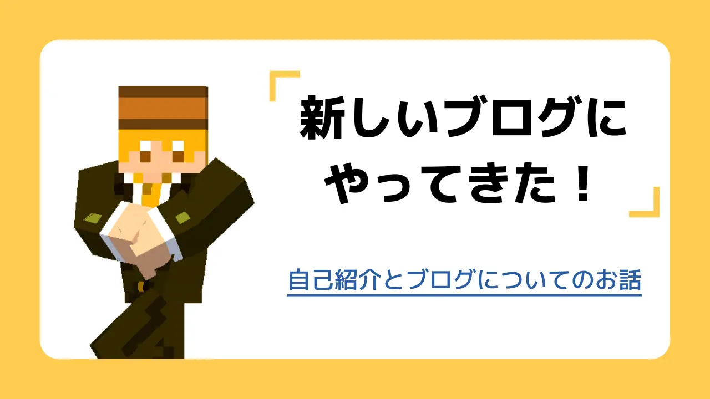

新しいブログにやってきた！
#ブログ
2024/07/06
三度目の正直
どもーーーーーーーーーーーーーーーーー！
はちみつと申します！
普段はYoutubeでゆっくり実況の動画を投稿してたり、Xでしょうもない事言ってたりしています。
自己紹介はその程度しか語ることは無いのでこれで終わらせちゃいますが、まずこの三度目の正直ってなんだよって話ですよね。
実ははちみつさん、過去に2度自分のブログサイトを作ったことがあります。知る人ぞ知るってヤツ？
1つ目がWixってサイトで作ったブログ、もういっこは自分でコーディングしてイチから作った奴です。どんな中身を書いていたかは全く覚えてないので見に行くなら覚悟してください笑
なんでこんなに転々としてるのかと言うと、書くのがめんどいんです。ブログなんか書くのやめちまえ
Wix時代は、Wixで記事を書く時ってかなり直感的に作れる（例えるならAdobeのイラストレーターみたいにテキストボックスを好きな位置に置いて文字が書ける）んですが、それが逆にめんどくて書くのやめちゃいました。
そしてその次は自分でコーディングしたサイト、これはちょっと専門的な話かもしれないんですが、その頃は今よりずっと知識も浅くhtmlとcssだけで作ってたのですげぇ使いにくいんです。
具体的に言うと、新しく記事を書くじゃないですか。その後にブログ一覧のページにhtmlを書き足して、サイドバーに新着記事を表示させてたからそれも更新して・・・って、あまりにもめんどくさすぎる！！！
あとこれはめんどくさいとかじゃないんですけど、スマホで見てもPCと同じ表示なんですよね。いわゆるレスポンシブデザインじゃないサイトだったんです。
それに加えてWixの時もその次も、デザインがひどい！！！！！今が良いとは言わないけど結構酷かったです。
そんな訳でこのサイトを新しく作ったというワケ。
2個目のサイトは自分でコーディングしたものだって言いましたが、実はこのサイトも自分でイチからコーディングしたものです。
さっき言った前のサイトで不便だったり良くなかったところも改善しました。
まぁ正直、正直な話をすれば、WordPressとかで作るのが一番簡単で楽でいいと思うんです。
でも・・・
折角なら自分で作ったほうが面白いよな！？なぁ？
皆さん見ましたかトップページの一番最初に出てくる画面！
この画面いっぱいに出る所をメインビジュアルって言うんですが、このYoutubeみてぇな感じ・・・
めっちゃ良くなぁい？？？？？
そんな訳で自分で作ったほうが達成感もあるし、自由に作れていいよねって話でした。・・・あれそんな話だったっけ？
何を書こう
さて、このブログって一体どういったもんが書かれるのかってのを説明します。
ズバリ！
なんでも書きます。
前のブログも10も書いてないけど色々書きました。
例えば普通に雑談（とか、あとはゲームの話とか、Youtubeのちょっとしたテクニックとか、あと実写で「100均のイヤホンをぶった切って短くする」とかいうほぼ自分語り）アホみたいなユニークな企画なんかもやりました。ちなみに失敗してる
今回はそんな企画とか考えず、話したいことがあったら適当に話すみたいなガチなブログとしてやって行きたいなぁと思ってます。
・・・いや、ガチなブログってなんだ。
普通に何も考えずゆるくやっていきます。
さいごに
ひっっっっっさびさにブログを書いた気分！
実際は今年もクラコロに記事書いたりしてるんですけどね。
までもマイクラ以外の話題でテキトーにブログを書くっていうのは久々でしたね。
これからも出来るだけ頻度高めにこのブログは更新していく予定！できたら1週間に1本くらい更新出来たらいいな
そんな訳で一本目のブログはこれにて終了！
バイバイ！！！